User manual - Deterministic analyses¶
- The interface allows the user to launch the following types of deterministic analysis:
Designs of experiments for model evaluations on a set of input values
Model evaluations
Screening
Optimization
1- Designs of experiments¶
The user may defined a set of input values and then evaluate output variable at these points.
1-1 Design of experiments creation¶
- Create a new design of experiment through:
The Design of experiments item in the context menu of the relevant model in the study tree (item Definition and item Probabilistic model if it exists)

The Design of experiments creation box of the model diagram
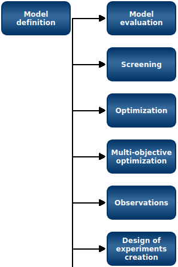
The New design of experiments item in the context menu of the Designs of experiments item
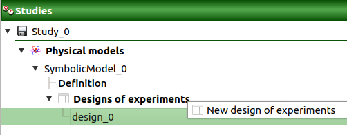
In the resulting window, the user has to choose between three types of design prior to click on the Continue button:
Full factorial design
Probabilistic design
Imported design
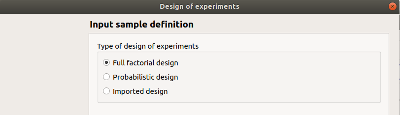
If the model does not contain stochastic input variables the Probabilistic item is disabled.
1-1-1 Deterministic design¶
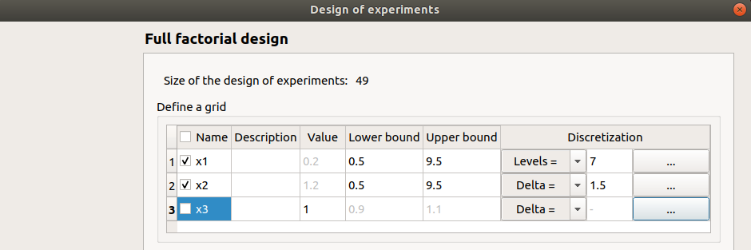
This window enables to create a points grid by regularly discretizing a pavement with the number of points specified in each direction.
The table lists all the input variables of the physical model. The user can choose the ones which vary and the ones which are fixed. A variable is fixed when the corresponding row is unselected (default: all variables are unselected and the grid contains only one point).
Fixed input variables: The user can define the value of the variable (default: value in the physical model definition). The values are expected to be floating points or integer.
Varying input variables: The user has to define the lower and upper bound for the variable. The values of the variable will be regularly spaced between the bounds. The bounds are always points of the grid.
The number of values is defined in the sixth column. The combo boxes of the fifth column have two items Levels= (default) and Delta=.
Levels: the user gives the number of points (default: 2).
Delta: the user gives the space between two points (default: (upper bound - lower bound)).
1-1-2 Probabilistic design¶
Define a probabilistic model to make this option available.
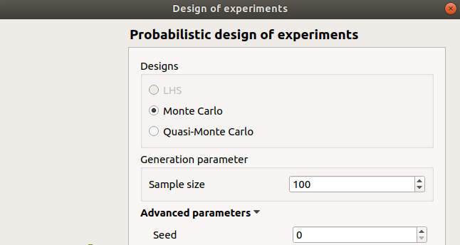
If stochastic input variables are present in the model, the Probabilistic item can be selected in the Input Sample definition window. Then the next window allows one to specify:
the type of the design: LHS (Latin Hyper Cube), Monte Carlo, Quasi-Monte Carlo. If input variables are correlated, LHS design is not available
the size of the design of experiments
the seed of the random generator (default: 0, positive integer expected)
1-1-3 Import data¶
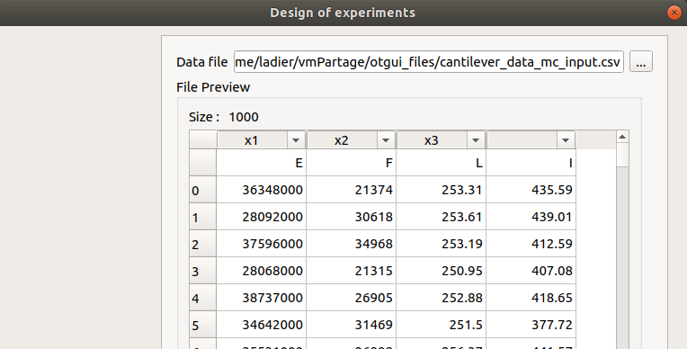
The user can also import a design of experiments, from an external file. It is then necessary to set the link between the columns of the imported design and the input (and optionally output) variables of the physical model, by clicking on the column name (default : first column for the first input variable, second column for the second input variable, etc…).
Use case:¶
The user wants to use an already evaluated design of experiments in a csv file, knows the input variables distribution and wants to evaluate the polynomial chaos coefficients. The method is as follows: - create and empty model (for example symbolic)
define the input and output variables
create a probabilistic model and define the input distribution
create an imported design of experiment
the resulting metamodel will use probabilistic model distributions parameters
1-1-4 Design of experiments: input sample¶
When the input sample is defined, a new element appears in the study tree, below Designs of experiments.
- Its context menu has the following actions:
Rename: Rename the design of experiments
Modify: Reopen the setting window to change the design of experiments parameters (modify the inputs values leads to remove the output values from the design of experiments)
Export data: Export the design of experiments into a file
Evaluate: Open a setting window to evaluate the model at the input points (if the design of experiments contains already output values, this item is disabled)
Remove: Remove the design of experiments from the study
A new window also appears:
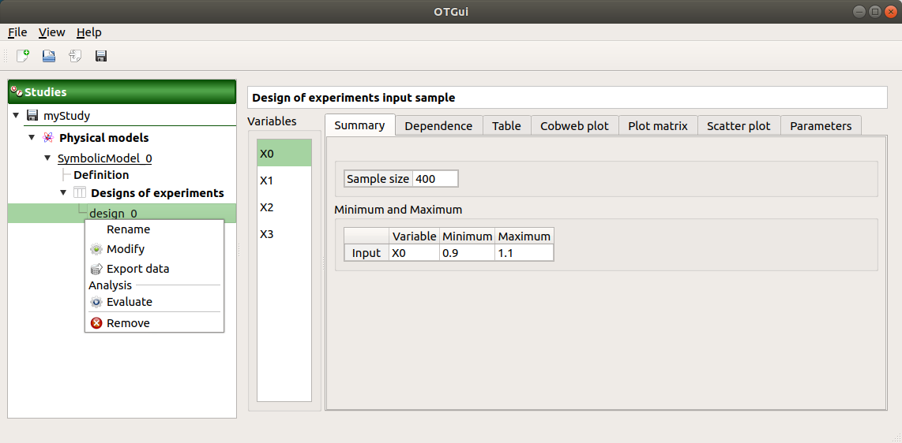
The window shows numerous tabs, some of which are interactively linked (Table, Parallel coordinates plot, Plot matrix and Scatter plot tabs): when the user selects points on one of these representations, the same points are automatically selected in the other tabs.
The Summary tab describes the input sample: sample size, minimum/maximum values of the selected variable (left column)
The Dependence tab displays the Spearman’s matrix estimate.
The cells are colored according to the value of the Spearman’s coefficient.
Its context menu allows one to export the table in a CSV file or as a PNG image.
Select cells and Press Ctrl+C to copy values in the clipboard
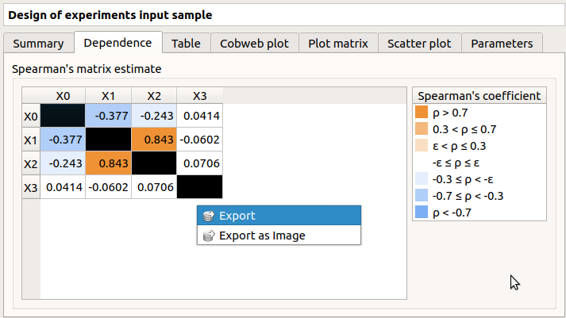
The Table tab contains all the points of the input sample. The table can be exported (Export button).
- Table interactivity:
Left-click (optional: + Ctrl) on lines to select them
Left-click on column header to sort values in ascending or descending order
Left-click on a column header and drag it in another place to change columns order
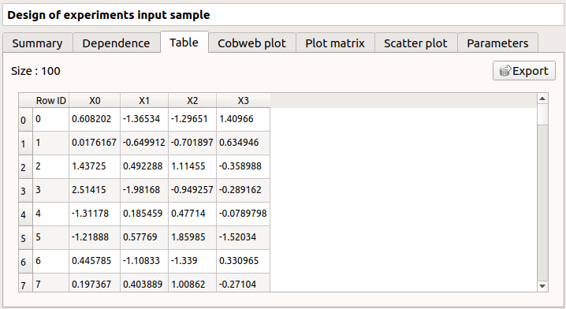
The Parallel coordinates plot tab displays all the points of the input sample.
Use the Graph settings window to set up graphical parameters.
- Graph interactivity:
Left-click on columns to select curves (multiple selection possible)
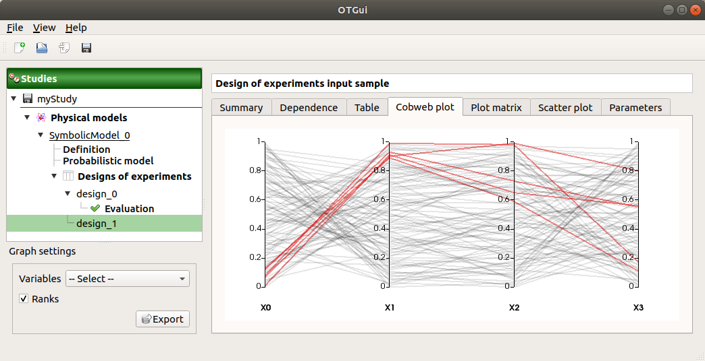
The Plot matrix tab: histograms of the distribution of each variable (diagonal) and scatter plots between each couple of input variables (off-diagonal).
Use the Graph settings window to set up graphical parameters.
- Graph interactivity:
Right-click to select points
Left-click to translate the graph
Mouse wheel up/down to zoom in/zoom out
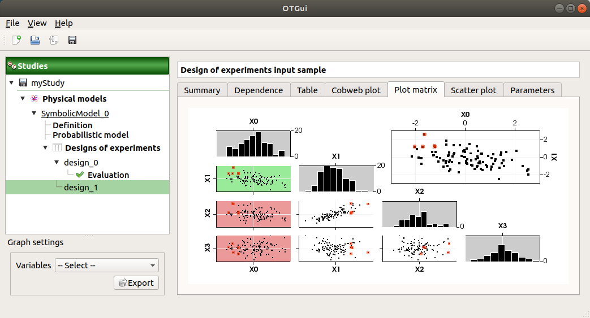
The Scatter plots tab displays the scatter plot of two parameters.
Use the Graph settings window to set up graphical parameters and select the variables to plot on X-axis and Y-axis (default: first versus second input)
- Graph interactivity:
Right-click to select points
Left-click to translate the graph
Mouse wheel up/down to zoom in/zoom out
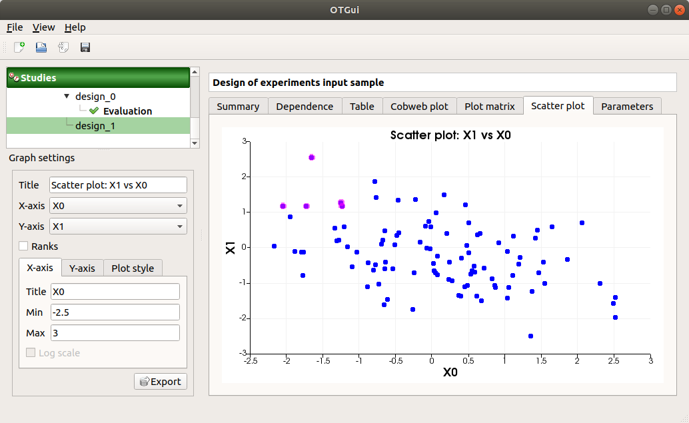
The Parameters tab lists the design parameters.
1-2 Design of experiments: evaluation¶
- New design of experiments can be evaluated through:
the Evaluate item in the context menu of the relevant design in the study tree
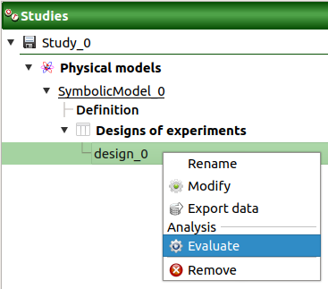
the Design of experiments evaluation box of the model diagram
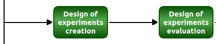
1-2-1 Definition¶
- When a design of experiments evaluation is required, a window appears, in order to set up:
the output variables of interest: at least one must be selected to validate the window
the block size: defines the maximum number of samples queued for evaluation by the physical model, regardless if the latter supports parallel evaluation or not.
Actual parallelization of the evaluations of the same block also depends on the type of the physical model; for example the Python model allows for parallel evaluations depending on its allocated process number setting. In that case it would usually be set to match the process number, but other use-cases are possible.
Default is 1.
Note that progress reports or analysis stopping event check happen at the completion of a block, so larger block sizes will trigger updates less frequently.
More generally outside of the context of design of experiments evaluation, some of the analysis do not support block evaluations like some optimization algorithms, in that case evaluations may be submitted one by one (preventing to benefit from parallelization), or submitted by arbitrary block size for example when evaluating finite difference gradients.
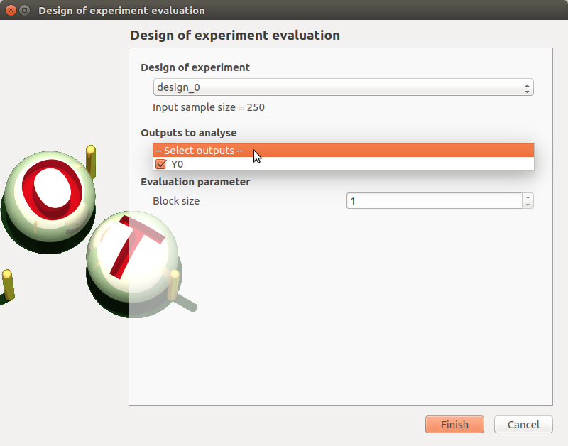
If the window is required by clicking on the box of the model diagram, it lists all the designs of experiments of the model in the combo box of the Design of experiments section.
1-2-2 Launch¶
When the Design of experiment: Evaluation window is validated, a new element Evaluation appears in the study tree, below the relevant design of experiments item.
- Its context menu has the following actions:
Modify: Reopen the setting window to change the evaluation parameters;
Metamodel: Create a new metamodel.
This item is associated with a window showing the parameter list, a progress bar and Run/Stop buttons to launch or stop the analysis.
The Stop button will request the analysis to stop cleanly after the completion of the evaluation of the current block.
In case of a Python or Coupling physical model with cluster mode enabled, the Detach button allows to continue evaluating the current block of simulations offline.
To continue the analysis (after eventually having saved/reloaded for another session), press the Run button again. Meanwhile, if the evaluations of the current block have finished, the analysis should update to the next block. In this cases one may want to set the block size to the total number of simulations so that the analysis not only completes the current block but all simulations when you reconnect.
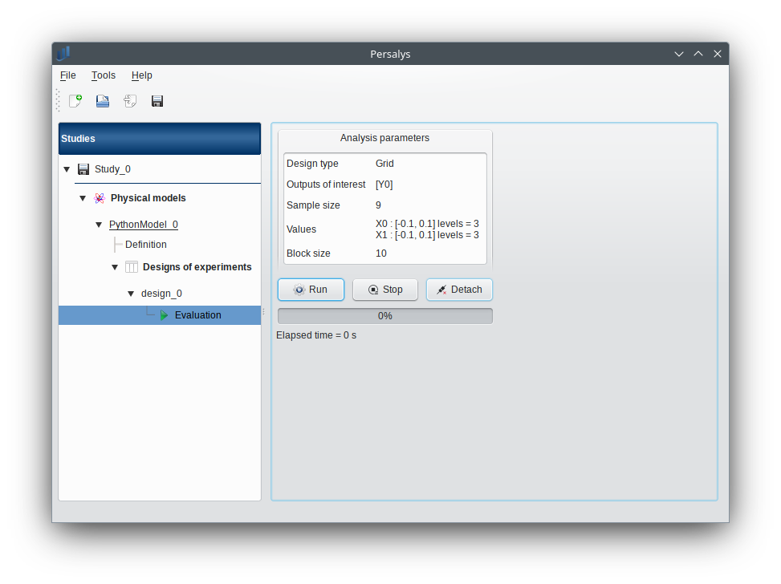
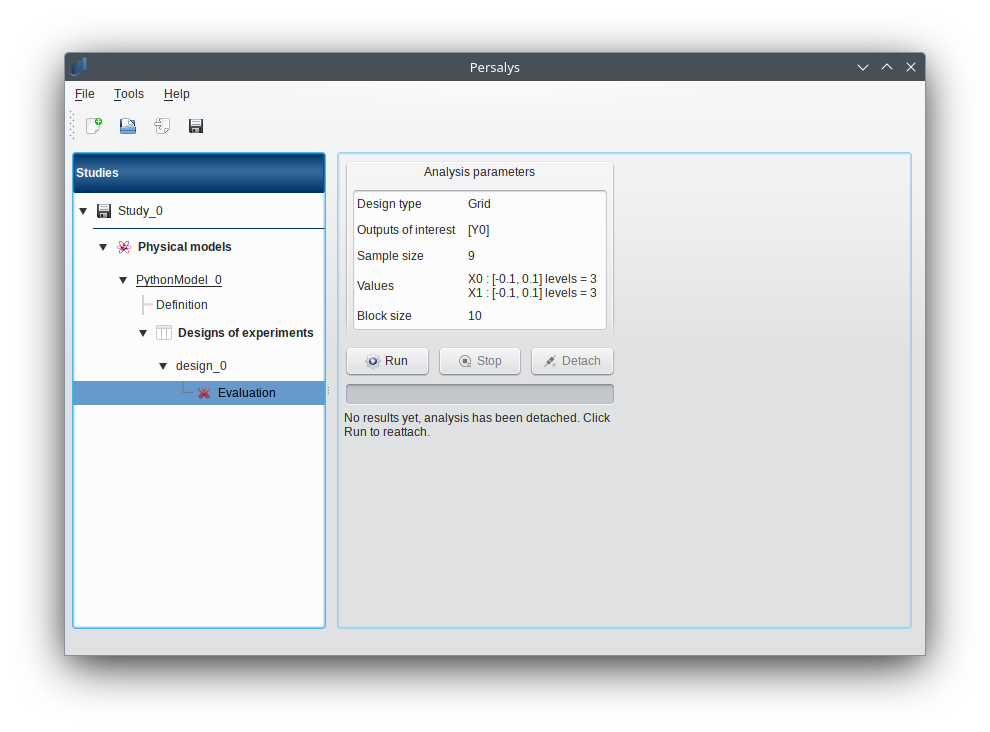
1-2-3 Results¶
When the analysis is finished or stopped, the following window appears.
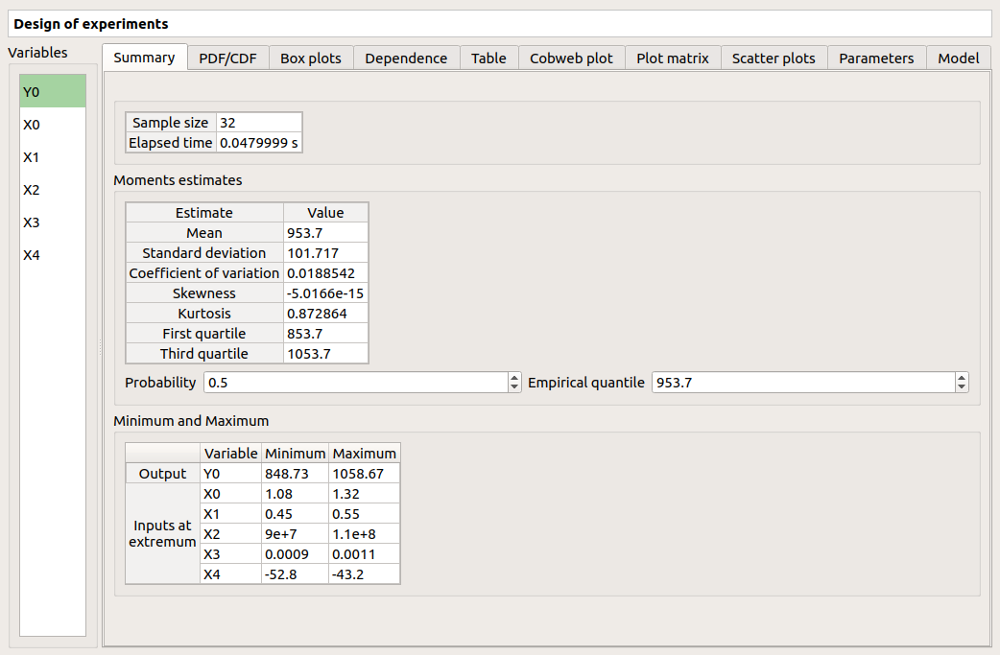
The window shows numerous tabs, some of which are interactively linked (Table, Parallel coordinates plot, Plot matrix and Scatter plot tabs): when the user selects points on one of these representations, the same points are automatically selected in the other tabs.
The Summary tab summarizes the results of the design, for a selected variable (left column): sample size, minimum/maximum values, input values at the extrema of the outputs, moments estimates and empirical quantiles.
The PDF/CDF tab presents the PDF/CDF of the variables together with a kernel smoothing representation.
Use the Graph settings window to set up graphical parameters and select the graphic type: PDF (default) or CDF
- Graph interactivity:
Left-click to translate the graph
Mouse wheel up/down to zoom in/zoom out
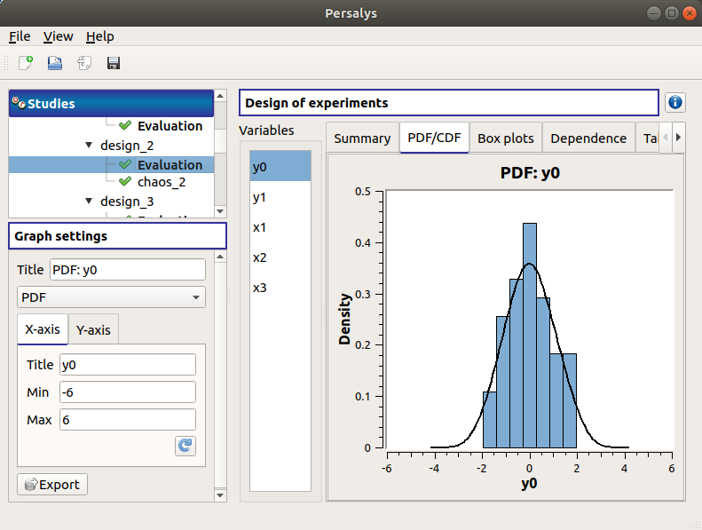
The Box plots tab presents the box plot of the variables. They are rescaled for each variable (
![x]() ), using mean (
), using mean (![\mu]() ) and standard deviation (
) and standard deviation (![\sigma]() ):
): ![y = (x - \mu)/\sigma]()
Use the Graph settings window to set up graphical parameters.
- Graph interactivity:
Left-click to translate the graph
Mouse wheel up/down to zoom in/zoom out
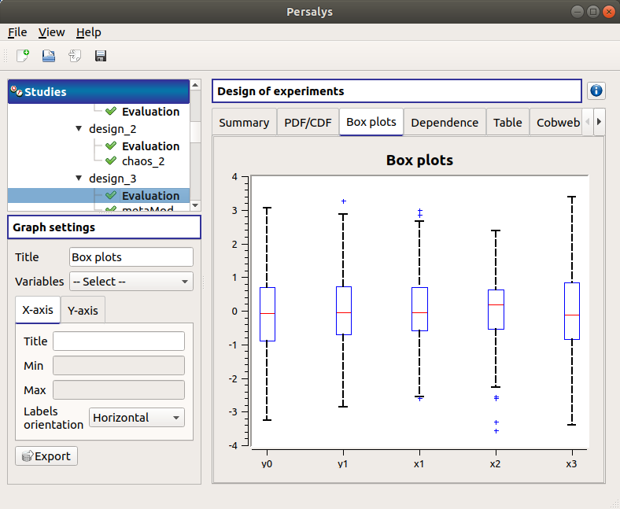
The Dependence tab displays the Spearman’s matrix estimate.
The cells are colored according to the value of the Spearman’s coefficient.
Its context menu allows one to export the table in a CSV file or as a PNG image.
Select cells and Press Ctrl+C to copy values in the clipboard

The Table tab shows the input/output samples and additional tabs, if some points failed or were not evaluated (see below). The table can be exported (Export button).
- Table interactivity:
Left-click (optional: + Ctrl) on lines to select them
Left-click on column header to sort values in ascending or descending order
Left-click on a column header and drag it in another place to change columns order
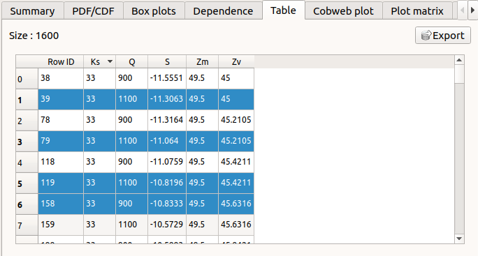
The Parallel coordinates plot tab displays all the points of the design of experiments.
Use the Graph settings window to set up graphical parameters.
- Graph interactivity:
Left-click on columns to select curves (multiple selection possible)
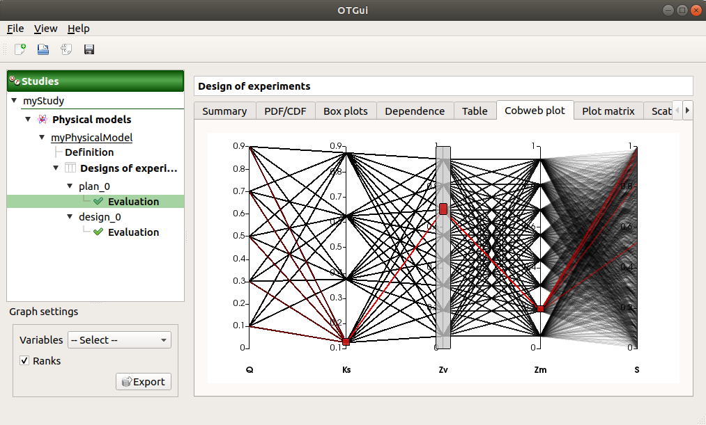
The Plot matrix tab: histograms of the distribution of each variable (diagonal) and scatter plots between each couple of input/output variables (off-diagonal).
Use the Graph settings window to set up graphical parameters.
- Graph interactivity:
Right-click to select points
Left-click to translate the graph
Mouse wheel up/down to zoom in/zoom out
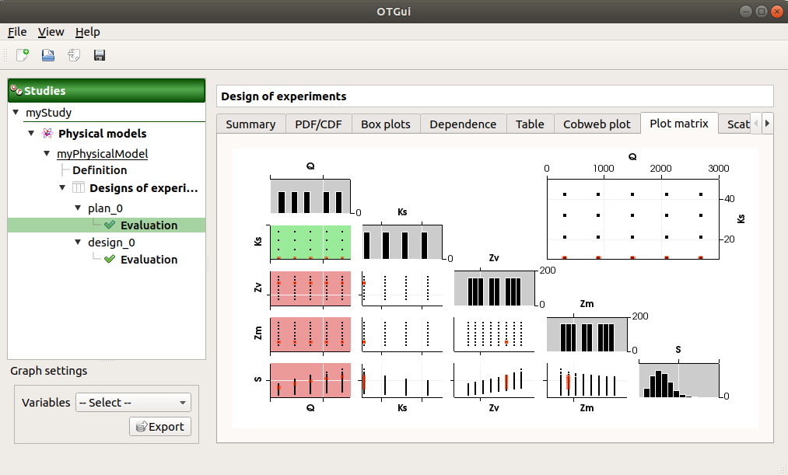
The Scatter plots tab displays the scatter plot of two parameters.
Use the Graph settings window to set up graphical parameters and select the variables to plot on X-axis and Y-axis (default: first output versus first input)
- Graph interactivity:
Right-click to select points
Left-click to translate the graph
Mouse wheel up/down to zoom in/zoom out
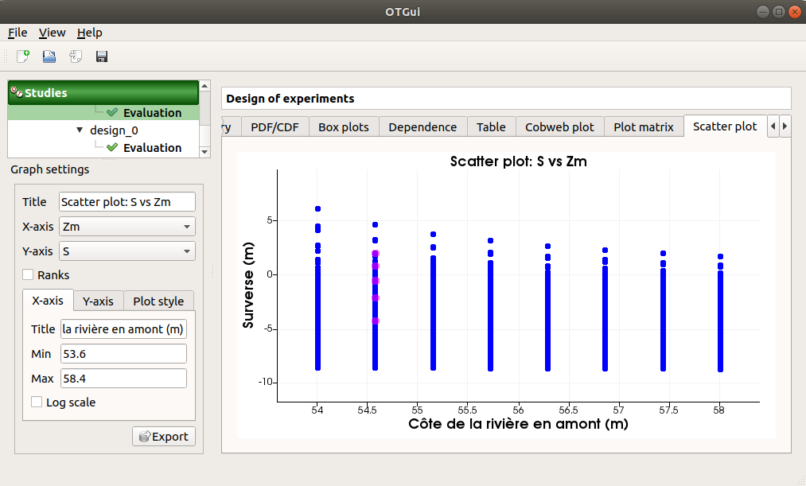
The Parameters tab lists the evaluation parameters.
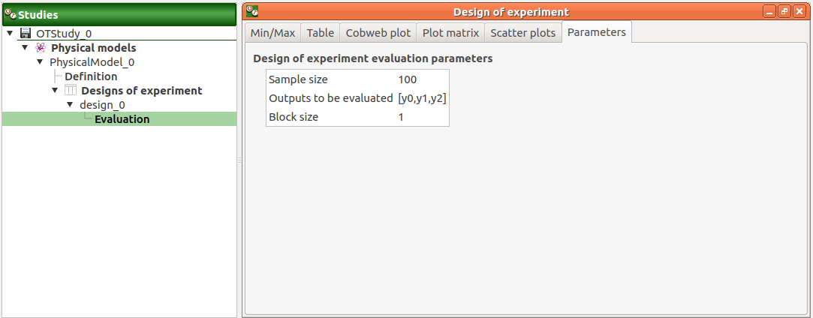
The Model tab shows the model content used to perform the analysis.
- Particular situations:
In some cases, points can fail (i.e. division by zero): the Table tab will then show additional tabs:
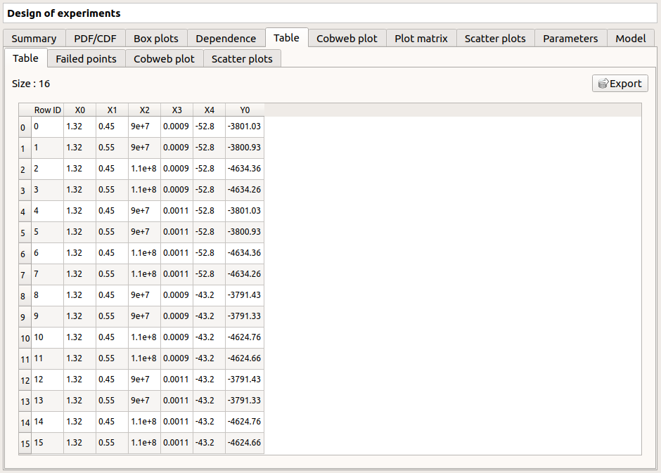
The Table tab shows the input/output samples
- Table interactivity:
Left-click (optional: + Ctrl) on lines to select them
Left-click on column header to sort values in ascending or descending order
Left-click on a column header and drag it in another place to change columns order
The Failed points tab shows all the failed input points
The Parallel coordinates plot tab displays all the input points. The status of each point is shown in the last column Status (failed points=0; evaluated points=1).
Use the Graph settings window to set up graphical parameters.
- Graph interactivity:
Left-click on columns to select curves (multiple selection possible)
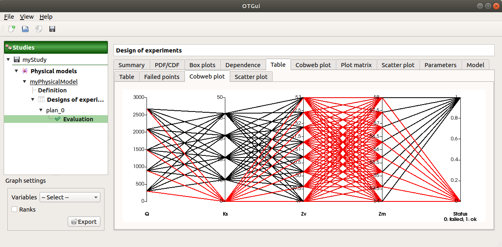
On the figure above, the failed values are due to null values for the Ks input variable.
The Scatter plot tab displays the scatter plot of two parameters (default: first versus second input), with failed points in red and evaluated points in green.
Use the Graph settings window to set up graphical parameters and select the variables to plot on X-axis and Y-axis (default: first output versus first input)
- Graph interactivity:
Right-click to select points
Left-click to translate the graph
Mouse wheel up/down to zoom in/zoom out
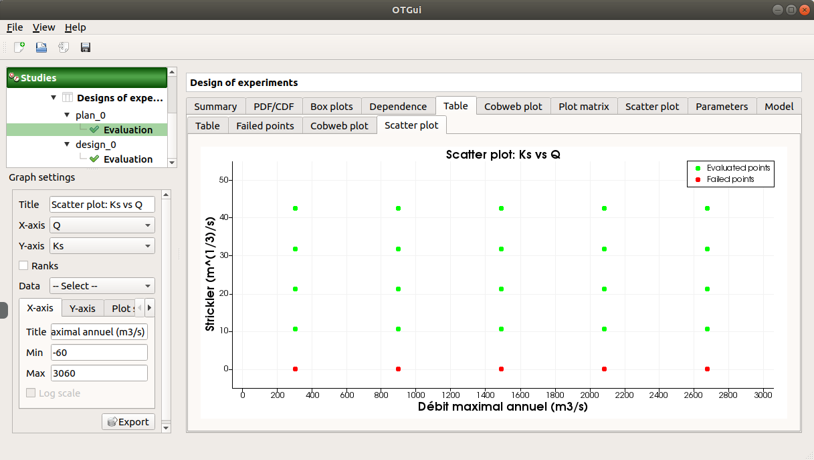
On the figure above, the failed values are due to null values for the Ks input variable.
Some points can also end up not being evaluated (i.e. interrupted analysis). The Table tab then displays informative tabs about these points:
The list of these points in the Non-evaluated points tab
The position of these points (non-evaluated points in blue and evaluated ones in green) in the Scatter plot tab (default: first vs second input plot). Graph parameters can be set up in the Graph settings window.
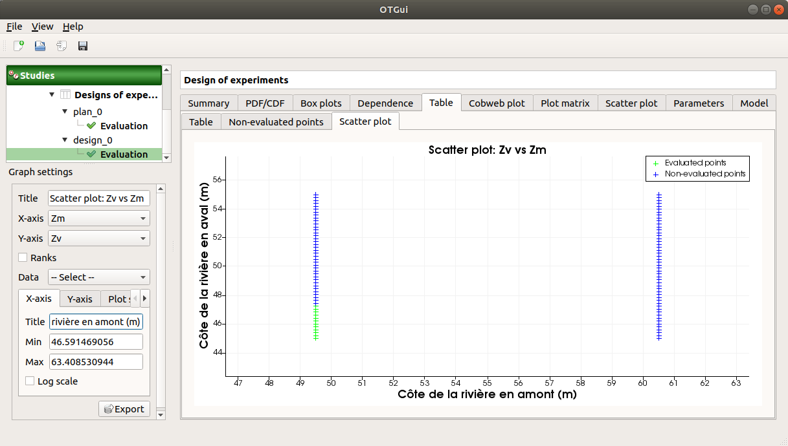
2- Model evaluation¶
The user may evaluate the physical model for defined input values.
- Create a new model evaluation through:
The Definition item in the context menu of the relevant model in the study tree
The Model evaluation box of the model diagram
The New evaluation item in the context menu of the Evaluation section
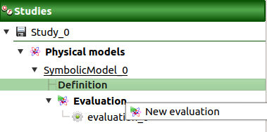
2-1 Definition¶
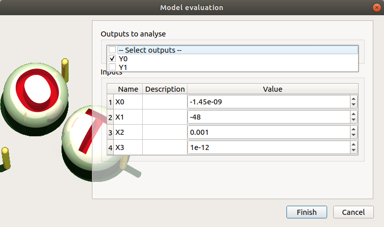
- When an evaluation is required, a window appears, in order to set up:
The outputs of interest (Select outputs - default: all outputs are evaluated). At least one variable must be selected to validate the window.
The value of the input variables (default: value in the physical model definition). The values are expected to be floating points or integer.
2-2 Launch¶
When the Model Evaluation window is validated, a new element appears in the study tree, below Evaluation.
- Its context menu has the following actions:
Rename: Rename the analysis
Modify: Reopen the setting window to change the analysis parameters
Remove: Remove the analysis from the study
This item is associated with a window showing the parameter list, a progress bar and Run/Stop buttons, to launch or stop the analysis.
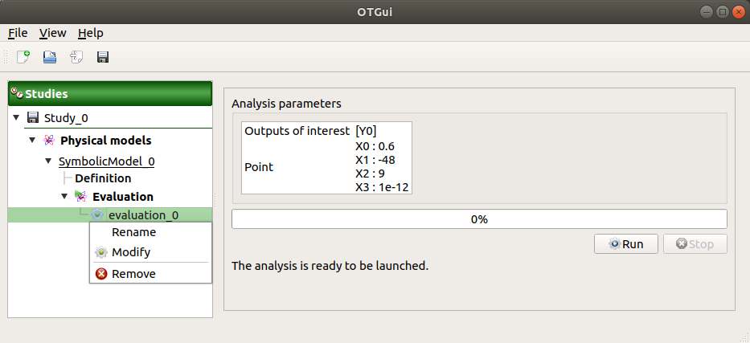
2-3 Results¶
When the evaluation is finished, a result window appears. It gathers the coordinates of the evaluation point and the corresponding output values.
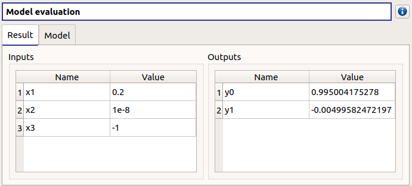
3- Morris Screening¶
The interface proposes one method of screening, the Morris method.
- New morris analysis can be created thanks to:
the Morris item in the context menu of the relevant model in the study tree
the Morris box of the model diagram
the New Analysis item in the context menu of the Morris sections
3-1 Definition¶
- When the analysis is required, the following window appears, in order to set up:
The outputs of interest (Select outputs - default: all outputs are analyzed)
The screening Method (only the Morris method is available for now)
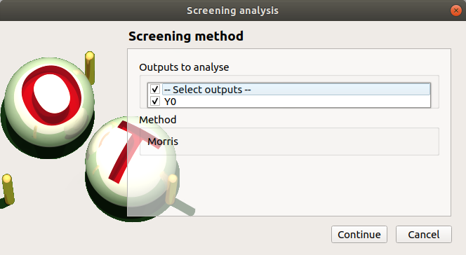
The next window enables the user to define the lower and upper bounds of each variable. The values of the variables will be regularly spaced between these bounds.
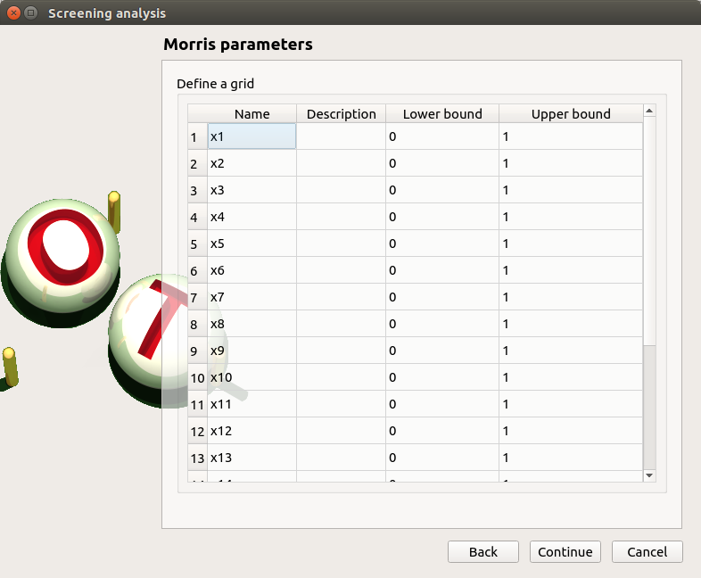
- In the third window (Morris Parameters), the user can set up:
The number of trajectories (default:10; integer expected)
The level to define a regular grid (default: 5; integer expected)
Advanced Parameters (default: hidden): the seed of the random generator (default: 0, positive integer expected)
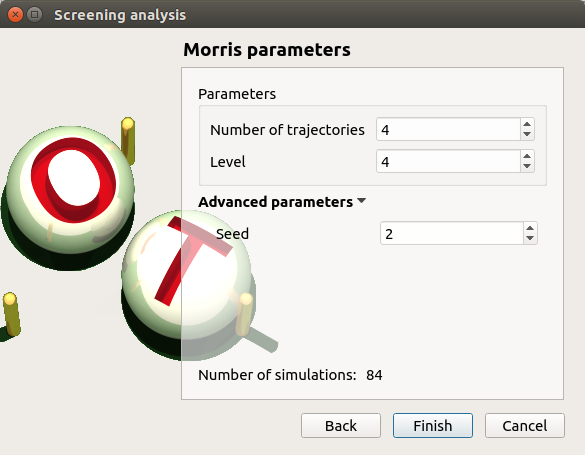
3-2 Launch¶
When the Screening analysis window is validated, a new element appears in the study tree, below Screening.
- Its context menu has the following actions:
Rename: Rename the analysis
Modify: Reopen the setting window to change the analysis parameters
Remove: Remove the analysis from the study
This item is associated with a window showing the parameter list, a progress bar and Run/Stop buttons, to launch or stop the analysis.
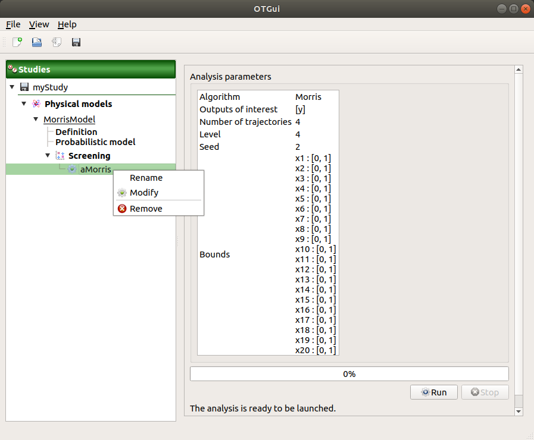
3-3 Results¶
When the analysis is finished or stopped, a result window appears.
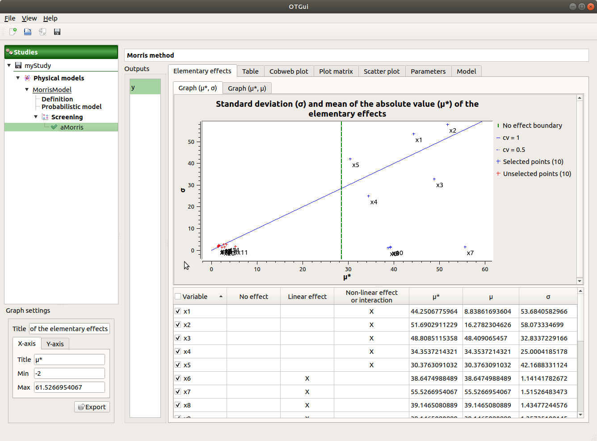
On the left of the result window, the Outputs section allows the user to select the result to display.
The results window gathers several tabs:
The Elementary effects tab presents for a selected output (left column): a table with the effects of each input variable and the mean of the absolute value (
![\mu*]() ),
the standard deviation () and the mean () of the elementary effects.
These values are plotted in the graphs
),
the standard deviation () and the mean () of the elementary effects.
These values are plotted in the graphs ![(\mu*, \sigma)]() and
and ![(\mu*, \mu)]() .
.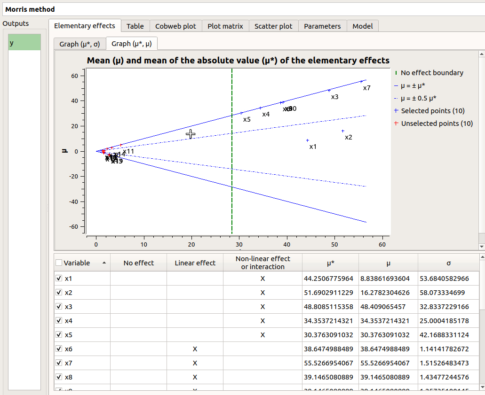
The types of effects are determined automatically according to two criteria modeled by two lines in the graph
:the green vertical dotted line, called No effect boundary is defined by:
![\mu_b* = \frac{max(\mu_i*) - min(\mu_i*)}{2}]() , (with
, (with ![i]() in
in ![[0, N]]() and
and ![N]() the number of inputs).
the number of inputs).- It separates the variables into two groups:
the variables which have no effect (
![\mu_i < \mu_b*]() )
)the variables which have an effect (
)
This boundary
![\mu_b*]() can be changed by the user by moving the slider below the plot.
can be changed by the user by moving the slider below the plot.the blue dotted line, called ‘cv = 0.5’ is defined by:
![cv = \frac{\sigma_i}{\mu_i*} = 0.5]() .
.- It separates the variables into two groups:
the variables which have a linear effect (
![\frac{\sigma_i}{\mu_i*} <= 0.5]() )
)the variables which have a non-linear effect or interaction (
![\frac{\sigma_i}{\mu_i*} > 0.5]() )
)
- On the graph , the blue lines separate the variables into two groups:
the monotonic variables (
![|\mu_i| \simeq \mu_i*]() )
)the non-monotonic variables (
![|\mu_i| < \mu_i*]() )
)
The sign of
![\mu_i]() gives the direction of the effect.
gives the direction of the effect.- On the graph
By default, in the table, the variables with no effect are unselected.
- The user can de/select variables manually by:
changing the state of the check button associated with the variable in the table
de/selecting points in the graphs (select points with a right-click drag and drop rectangle, then click on de/select button of the context menu which appears).
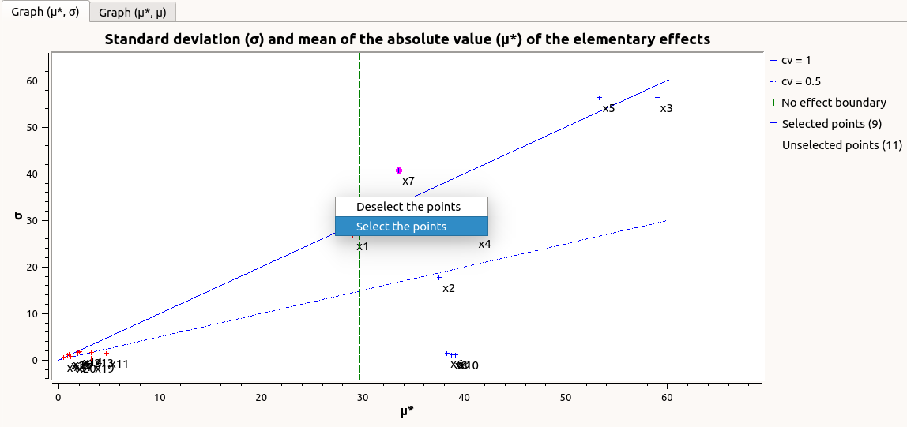
The selection of the influential variables is saved. This result can be used in the probabilistic model definition window to transform the non-influential stochastic variables into deterministic variables.
The Table tab shows the sample generated by the Morris method and the resulting output values.
- Table interactivity:
Left-click (optional: + Ctrl) on lines to select them
Left-click on column header to sort values in ascending or descending order
Left-click on a column header and drag it in another place to change columns order
The Parallel coordinates plot tab displays the sample.
Use the Graph settings window to set up graphical parameters.
- Graph interactivity:
Left-click on columns to select curves (multiple selection possible)
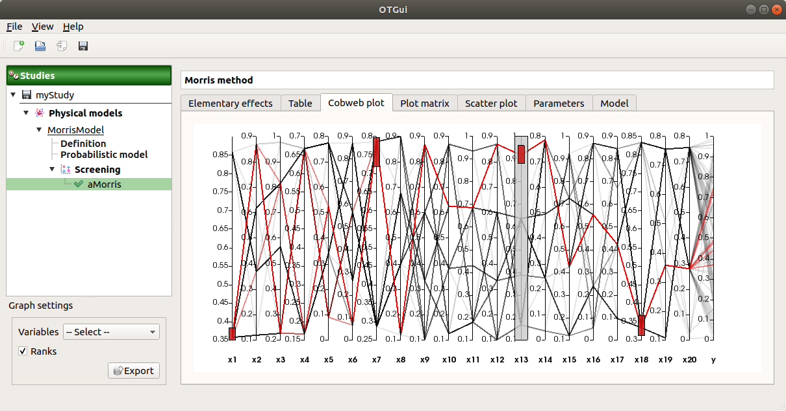
The Plot matrix tab: histograms of the distribution of each variable (diagonal) and scatter plots between each couple of input/output variables (off-diagonal).
Use the Graph settings window to set up graphical parameters.
- Graph interactivity:
Right-click to select points
Left-click to translate the graph
Mouse wheel up/down to zoom in/zoom out
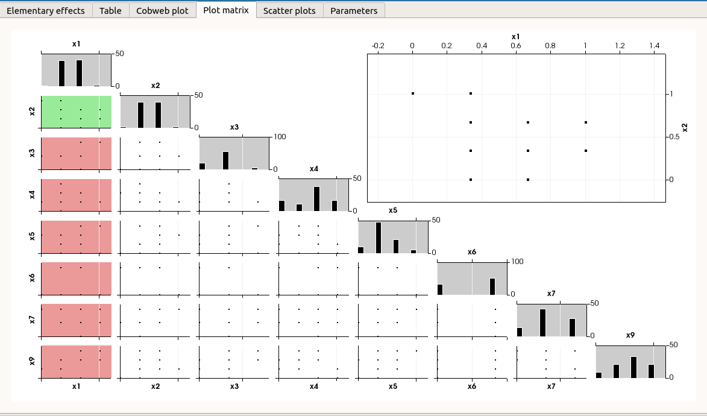
The Scatter plots tab displays the scatter plot of two parameters.
Use the Graph settings window to set up graphical parameters and select the variables to plot on X-axis and Y-axis (default: first output versus first input)
- Graph interactivity:
Right-click to select points
Left-click to translate the graph
Mouse wheel up/down to zoom in/zoom out
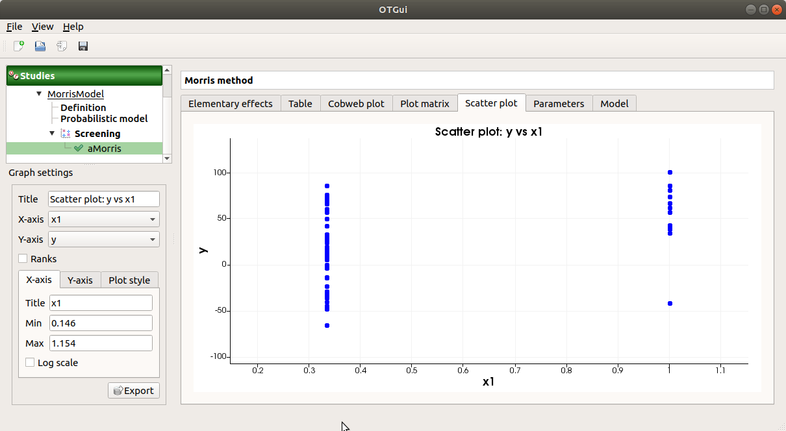
The Parameters tab reminds the user of all the parameters values used to perform the analysis.
The Model tab shows the model content used to perform the analysis.
3-4 Use results¶
In the probabilistic model definition window, click on the button Import Morris result placed below the table.
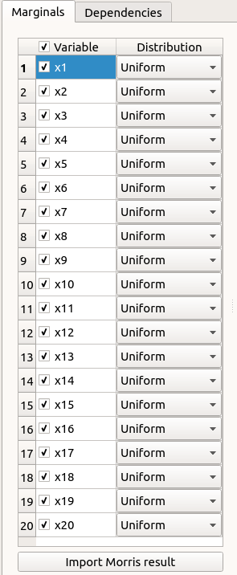
The following window appears (only if a result exists). Variables must be checked in the Morris ananlysis result window so they can be used in the probabilistic model definition:
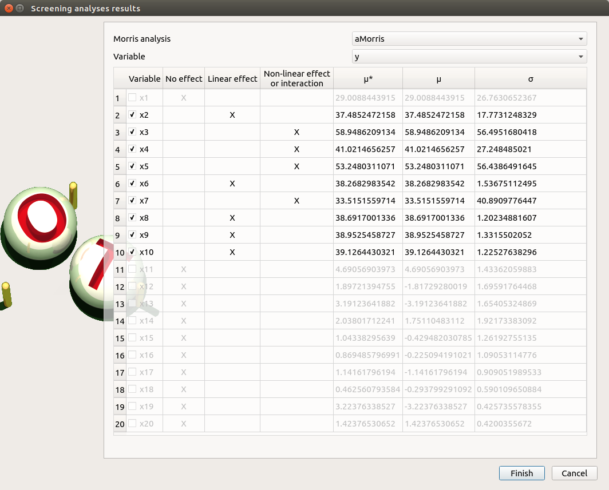
Select the suitable result and click on the Finish button. The probabilistic model is modified as follows:
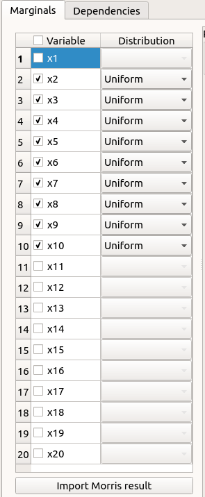
Of course loading a result while all the input variables are already deterministic will not work…
4- Optimization¶
The user may optimize the physical model.
- New model optimization can be created through:
the Optimization item in the context menu of the relevant model in the study tree
the Optimization box of the model diagram
the New Analysis context menu of the Optimization section
4-1 Definition¶
- When this analysis is requested, the following window appears:
First column: Select the inputs which will vary by checking off the corresponding line (default: all inputs vary) At least one input must vary.
Second column: description of the variables (defined in the model)
Third column: Define the starting point of the optimization (default: value in the physical model definition)
Fourth and Fifth columns: Define the bounds of the variable inputs. The lower bound must be less than the upper bound. Check off/uncheck a cell to make the bound finite/infinite. This will condition the list of proposed algorithms on the next page The interval must contain the initial value (third column).
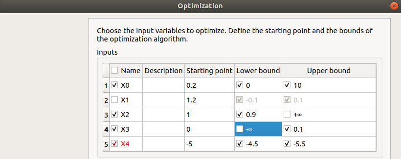
- In next window, one can set up:
The output of interest (Select output - default: the first output is analyzed). Only one output must be selected.
The method of optimizations are listed in the table below. Proposed algorithms are given by OpenTURNS depending on which optional libraries are installed. The user can filter the list according to the desired algorithm property (Locality and use of derivative information). The default algorithm will change based on this selection according to this:
Case |
Default algorithm |
|---|---|
No bounds, no derivative, local |
Cobyla |
No bounds, no derivative, global |
Impossible |
No bounds, with derivative, local |
LD_LBFGS |
No bounds, with derivative, global |
Impossible |
With bounds, no derivative, local |
Cobyla |
With bounds, no derivative, global |
GN_MLSL |
With bounds, with derivative, local |
LD_LBFGS |
With bounds, with derivative, global |
GD_MLSL |
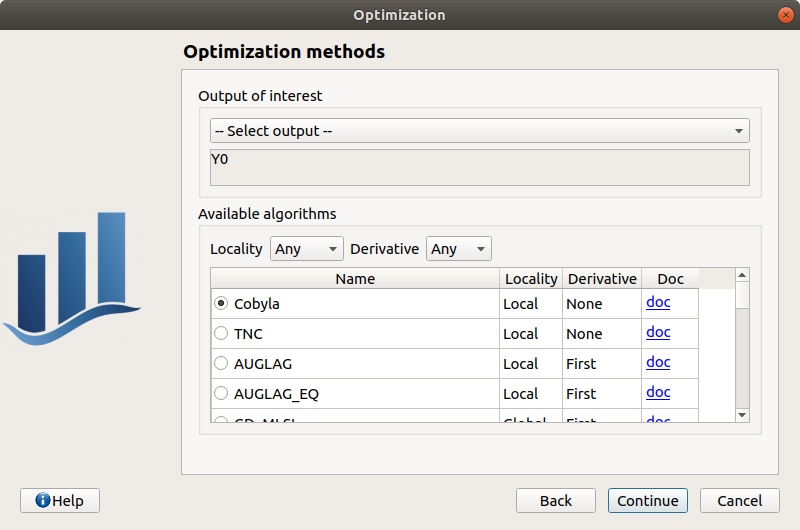
The values of the table are expected to be floating points or integer.
- When a rule is not respected:
the input name is colored in red
an error message appears when clicking on the Continue button
it is impossible to go to the next page
- In the third window set up:
the type of the optimization: Minimization or Maximization (default: Minimization)
- the stopping criteria:
the maximum number of function evaluations (default: 100, positive integer expected)
the errors: absolute, relative, residual and constraint errors (default: 1e-5, positive float expected)
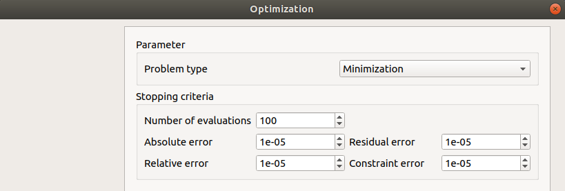
4-2 Launch¶
When the Optimization window is validated, a new element appears in the study tree, below Optimization.
- Its context menu has the following actions:
Rename: Rename the analysis
Modify: Reopen the setting window to change the analysis parameters
Remove: Remove the analysis
This item is associated with a window showing the parameter list, a progress bar and Run/Stop buttons, to launch or stop the analysis.
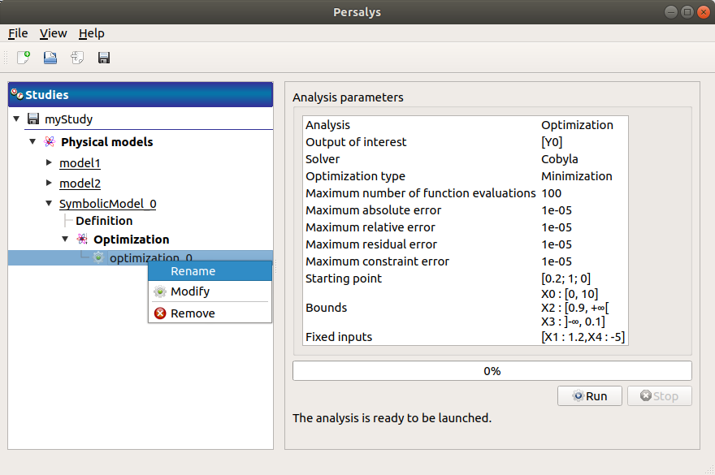
Click on the Start button to launch the analysis.
4-3 Results¶
When the analysis is finished, a result window appears.
The results window gathers the following tabs:
- The Result tab includes:
The optimal point
- The optimization stopping criteria value:
The number of function evaluations;
The errors: absolute, relative, residual and constraint errors.
- The Convergence tab includes:
The optimal value convergence graph
The convergence graph of the errors
- Graph interactivity:
Left-click to translate the graph
Mouse wheel up/down to zoom in/zoom out
The Parameters tab reminds the user of all the parameters values to perform the analysis.
The Model tab shows the model content used to perform the analysis.
5- Multi-objective Optimization¶
The user may optimize simultaneously several physical model outputs.
- New model multi-objective optimization can be created through:
the Multi-objective optimization item in the context menu of the relevant model in the study tree
the Multi-objective optimization box of the model diagram
the New Analysis context menu of the Multi-objective optimization section
5-1 Definition¶
- When this analysis is requested, the following window appears:
The outputs of interest (Select outputs - defaults to selected outputs from the physical model window). At least two outputs must be selected.
The method of optimizations are listed in the table below. Proposed algorithms are from pagmo library and given by OpenTURNS
In next window, one can set up the type of the optimization: Minimization or Maximization (default: Minimization) for each of the output of interest.
In next window, one can optionally set up the constraints associated to the optimization problem outputs.
First column: the output of interest that needs to be constrained.
Second column: the operator type (<,>,=)
Third column: the threshold the constraint must respect (must be a floating point value)
Constraints can be added/removed using the Add/Remove buttons. Removing a specific constraint can be done by first selecting the corresponding line then clicking the remove button.
In next window, the user can specify the bounds and/or fixed values for input variables. The bounds will define the algorithm initial population and evolution domain. If a variable must not evolve and remain constant, deselect it and specify its value.
First column: input variables, uncheck the box if the input must remain constant.
Second column: variable description, as specified during the model definition stage
Third column: fixed value for constant variables. The cell is disabled if the variable is checked
Fourth and Fifth columns: define the bounds of the variable inputs. The lower bound must be less than the upper bound. The cells are disabled if the variable are unchecked.
In the fifth and last window, the user can specify the evolutive algorithm parameters.
Number of generations (or number of evolution steps)
Initial population size (number of points in each evolution step)
Random generator seed.
5-2 Launch¶
When the Multi-objective optimization window is validated, a new element appears in the study tree, below Multi-objective optimization.
- Its context menu has the following actions:
Rename: Rename the analysis
Modify: Reopen the setting window to change the analysis parameters
Remove: Remove the analysis
This item is associated with a window showing the parameter list, a progress bar and Run/Stop buttons, to launch or stop the analysis.
Click on the Start button to launch the analysis.
5-3 Results¶
When the analysis is finished, a result window appears.
The results window gathers the following tabs:
The Result tab includes:
The pareto fronts plot.
Up to twelve fronts are represented in a different color in a 2D plane. The first front (front0) contains the best candidates according to the objectives.
Use the Graph settings window to set up graphical parameters and select the variables to plot on X-axis and Y-axis (default: first versus second input)
Graph interactivity:
click on a legend item to show/hide the corresponding front
Left-click to translate the graph
Mouse wheel up/down to zoom in/zoom out
The final population table
Data points obtained once the evolution is completed. An additional column specifies the pareto front index the point belongs to.
The Parameters tab reminds the user of all the parameters values to perform the analysis.
The Model tab shows the model content used to perform the analysis.
6- Observations¶
To perform a calibration analysis, define first observations for at least one output and one input.
6-1 Definition¶
Import a data file. Then set the link between columns of the imported data and variables of the physical model by clicking on the column name (default : first column for the first input variable, second column for the first output variable). Define observations for at least one output and one input.
6-2 Results¶
When the sample is defined, a new element appears in the study tree, below Calibration. This item is associated with a window showing a table of the observation values.
7- Calibration¶
The interface proposes to calibrate the physical model.
- New model calibration can be created through:
the Calibration item in the context menu of the relevant Observations in the study tree
the Calibration box of the model diagram
the New Analysis context menu of the Calibration section
7-1 Definition¶
- When this analysis is required, the following window appears, in order to set up:
The observations of interest
The method: Linear least squares (default), Non linear least squares, Linear Gaussian, Non linear Gaussian
- In the table of the next window:
First column: Select the inputs which will be calibrated by checking off the corresponding line (default: all inputs are calibrated) At least one input must be calibrated.
Second column: description of the variables (defined in the model)
Third column: Define the reference point of the calibration (default: value in the physical model definition)
The values of the table are expected to be floating points or integer.
- When a rule is not respected:
an error message appears when clicking on the Continue button
it is impossible to go to the next page
7-1-1 Gaussian methods¶
In the next window set up the prior distribution covariance matrix. The window lists automatically the calibrated input variables in the table. The mean values are defined in the table of the previous window.
In the next window define the covariance matrix of the output observations error. The window lists automatically the observed output variables in the table. The mean is zero. Default standard deviation is 0.1.
7-1-2 Linear methods¶
In the last window set up the confidence interval length of the posterior distribution.
7-1-3 Non linear methods¶
- In the last window set up:
the confidence interval length of the posterior distribution
- computation of the confidence interval by Bootstrap resampling (default: checked)
the sample size (default: 100, positive integer expected)
- the optimization stopping criteria:
the maximum number of function evaluations (default: 100, positive integer expected)
the errors: absolute, relative, residual and constraint errors (default: 1e-5, positive float expected)
7-2 Launch¶
When the Calibration window is validated, a new element appears in the study tree, below the observations item.
- Its context menu has the following actions:
Rename: Rename the analysis
Modify: Reopen the setting window to change the analysis parameters
Remove: Remove the analysis
This item is associated with a window showing the parameter list, a progress bar and Run/Stop buttons, to launch or stop the analysis.
Click on the Start button to launch the analysis.
7-3 Results¶
When the analysis is finished, a result window appears.
It shows numerous tabs, some of which are interactively linked (Table, vs Observations, vs Inputs tabs): when the user selects points on one of these representations, the same points are automatically selected in the other tabs.
The results window gathers the following tabs:
- The Theta tab includes:
- The Optimal tab which displays:
The optimal point and its confidence interval
The observations error standard deviation, which is, for gaussian cases an hypothesis (see example)
The prior and posterior PDF of the calibrated inputs (PDF tab)
- The Prediction tab includes, for a selected output (left column):
The Table tab contains the observations, the prior and posterior values and the prior and posterior residuals values. The table can be exported (Export button).
- Table interactivity:
Left-click (optional: + Ctrl) on lines to select them
Left-click on column header to sort values in ascending or descending order
Left-click on a column header and drag it in another place to change columns order
The vs Observations tab displays the prior and posterior predictions vs the output observations. The calibration performed well when the predictions after calibration (i.e. the green points) are close to the the diagonal of the graph (i.e. the blue points).
Use the Graph settings window to set up graphical parameters and select the data to plot
- Graph interactivity:
Right-click to select points
Left-click to translate the graph
Mouse wheel up/down to zoom in/zoom out
The vs Inputs tab displays the prior and posterior predictions vs the input observations. The calibration performed well when the predictions after calibration (i.e. the green points) are close to the observations (i.e. the blue points).
Use the Graph settings window to set up graphical parameters and select the data to plot and the variables to plot on X-axis (default: all predictions versus first observed input)
- Graph interactivity:
Right-click to select points
Left-click to translate the graph
Mouse wheel up/down to zoom in/zoom out
The Residuals tab display the distribution of the residuals (blue curve) and the Probability Distribution Function values of the difference between the output observations and the prior (red curve) and posterior (green curve) output values. The calibration performed well when the distribution of the residuals is centered on zero and symmetric.
Use the Graph settings window to set up graphical parameters and select the data to plot
- Graph interactivity:
Left-click to translate the graph
Mouse wheel up/down to zoom in/zoom out
The Residuals QQ-plot tab displays the residuals after calibration versus the Gaussian hypothesis - Blue points are the data and the red-dashed line in the Henry line
see example from OpenTURNS documentation
The Parameters tab reminds the user of all the parameters values to perform the analysis.
The Model tab shows the model content used to perform the analysis.